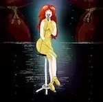
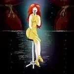

2020
Novembre
-
16 —
 Le Silmarillion de J.R.R. Tolkien
Le Silmarillion de J.R.R. Tolkien
- 07 — Armée ou défense civile non-violente
-
05 —
 Mais moi je vous aimais de Gilbert Cesbron
Mais moi je vous aimais de Gilbert Cesbron
-
02 —
 Des friches et des chiffres de Odette Laplaze-Estorgues
Des friches et des chiffres de Odette Laplaze-Estorgues
-
01 —
Inktober 2020

 



Octobre


Septembre
-
20 —
Drame, enquête et science-fiction

 J’aimerais tellement que tu sois là (Graham Swift), Équinoxe (Michael White), La mère des mondes (Isaac Asimov)
J’aimerais tellement que tu sois là (Graham Swift), Équinoxe (Michael White), La mère des mondes (Isaac Asimov) -
07 —
 💖 Naruto de Masashi Kishimoto
💖 Naruto de Masashi Kishimoto
Août
-
16 —
Nouvelles fantastiques et retour dans l’univers de Twilight
 Les maisons suspectes (Thomas Owen), ♡︎ Midnight Sun (Stephenie Meyer)
Les maisons suspectes (Thomas Owen), ♡︎ Midnight Sun (Stephenie Meyer) - 03 — La carotte
Juillet
- 16 — La courgette
- 16 — Le basilic
Juin
-
24 —
 Les larmes rouges de Georgia Caldera
Les larmes rouges de Georgia Caldera
-
16 —
Lectures hétéroclites de contes indiens à Guillaume Musso
Les aventures du Gourou Paramarta, L’appel de l’ange (Guillaume Musso)
- 09 — 7/13 de Jacques Saussey
-
03 —
3 romans, 3 registres différents


 Vampire brothers (Alice H. Kinney), Sans laisser de traces - Une enquête de Riley Paige (Blake Pierce), Âmes sœurs (John Marrs)
Vampire brothers (Alice H. Kinney), Sans laisser de traces - Une enquête de Riley Paige (Blake Pierce), Âmes sœurs (John Marrs)
Mai
- 16 — Le compost
-
15 —
 Petit traité de vie intérieure de Frédéric Lenoir
Petit traité de vie intérieure de Frédéric Lenoir
- 08 — Notes sur exoplanètes 2/2